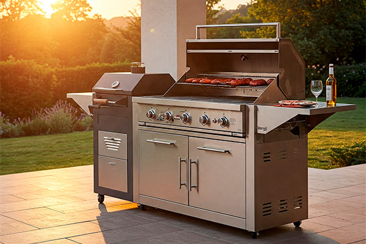

Guia Definitivo: Como Escolher a Churrasqueira Ideal para Você

A churrasqueira é o coração de todo bom churrasco. Mas com tantas opções no mercado – a carvão, a gás, elétrica, portátil, a bafo (smoker) – escolher o modelo ideal pode ser um desafio. A escolha certa depende do seu **espaço, orçamento, estilo de churrasco preferido e nível de praticidade** desejado.
Este guia vai te ajudar a entender as características, prós e contras de cada tipo principal, para que você faça a melhor escolha para suas necessidades.
1. Churrasqueira a Carvão
A clássica, preferida por muitos puristas pelo sabor defumado característico que o carvão confere à carne.
Prós:
- Sabor defumado autêntico.
- Atinge altas temperaturas, ideal para selar carnes.
- Geralmente mais acessível (modelos básicos).
- Variedade de modelos (portáteis, de alvenaria, tambor, etc.).
- Ritual do fogo apreciado por muitos.
Contras:
- Acendimento mais demorado e trabalhoso.
- Controle de temperatura exige mais prática.
- Produz mais fumaça e cinzas (sujeira).
- Não ideal para locais fechados ou varandas de apartamento (salvo modelos específicos com exaustão).
Ideal para: Quem valoriza o sabor tradicional do churrasco, tem espaço externo (quintal, área gourmet) e não se importa com o tempo de preparo do fogo.
2. Churrasqueira a Gás
Oferece praticidade e controle preciso de temperatura, sendo muito popular em varandas gourmet e para quem busca conveniência.
Prós:
- Acendimento rápido e fácil (girar um botão).
- Controle preciso da temperatura através dos queimadores.
- Menos fumaça e sujeira que a carvão.
- Ideal para varandas de apartamentos e locais com restrições.
- Aquecimento rápido e uniforme.
Contras:
- Não confere o mesmo sabor defumado do carvão (embora alguns modelos tenham "smoker box").
- Geralmente mais caras que modelos a carvão equivalentes.
- Dependência de botijão de gás ou ponto de gás encanado.
- Manutenção dos queimadores e componentes pode ser necessária.
Ideal para: Quem busca praticidade, rapidez, controle fácil de temperatura e mora em apartamento ou locais com restrição de fumaça.
3. Churrasqueira Elétrica
A opção mais compacta e prática para ambientes internos, mas com limitações em termos de sabor e capacidade.
Prós:
- Extremamente prática e fácil de usar (ligar na tomada).
- Não produz fumaça (ideal para apartamentos pequenos sem varanda).
- Compacta e fácil de guardar.
- Limpeza geralmente simples.
Contras:
- Não confere sabor de churrasco (nem defumado, nem de brasa). O resultado é mais parecido com um grelhado.
- Potência pode ser limitada para selar carnes grossas rapidamente.
- Área de cozimento geralmente menor.
- Dependência de ponto de energia elétrica.
Ideal para: Quem tem pouquíssimo espaço, mora em locais com restrição total de fumaça e busca apenas grelhar alimentos de forma prática.
4. Churrasqueira a Bafo (Smoker)
Projetada especificamente para cozimento lento ("low and slow") e defumação, ideal para cortes como costela, brisket e cupim.
Prós:
- Ideal para defumação e cozimento em baixas temperaturas por longos períodos.
- Produz carnes extremamente macias e saborosas (com anel de defumação).
- Controle de temperatura mais estável (em modelos de qualidade).
- Versátil para diferentes técnicas de BBQ americano.
Contras:
- Não é ideal para grelhar rapidamente em altas temperaturas (selar bifes).
- Processo de cozimento muito mais longo (horas).
- Exige mais conhecimento sobre controle de fogo e fumaça.
- Pode ocupar bastante espaço.
- Custo geralmente mais elevado.
Ideal para: Entusiastas do BBQ americano, quem gosta de defumar carnes e tem paciência para cozimentos longos.
Outros Fatores a Considerar:
- Tamanho e Capacidade: Pense para quantas pessoas você costuma cozinhar.
- Material e Durabilidade: Aço inox, ferro fundido e aço esmaltado são materiais comuns. Verifique a qualidade da construção.
- Portabilidade: Você precisa mover a churrasqueira com frequência? Existem modelos portáteis a carvão e a gás.
- Recursos Extras: Grelhas ajustáveis, termômetro na tampa, mesas laterais, acendedor automático, etc.
- Orçamento: Defina quanto você está disposto a investir.
Não existe a "melhor" churrasqueira universal, mas sim a **melhor churrasqueira para você**. Analise suas prioridades, seu espaço e seu estilo de cozinhar para fazer a escolha que trará os melhores resultados e a maior satisfação nos seus próximos churrascos!
Junte-se à Comunidade ChurrascoMania!
Siga-nos nas redes sociais e participe das discussões.